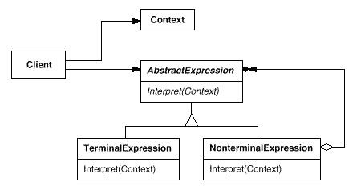

2008年04月10日 星期四 08:07 P.M.
深入浅出基于Java的解释器设计模式
开发者在线 Builder.com.cn 更新时间:2007-08-26作者：中国IT实验室 来源:中国IT实验室
本文关键词： JAVA 解释器设计模式
一、引子
其实没有什么好的例子引入解释器模式，因为它描述了如何构成一个简单的语言解释器，主要应用在使用面向对象语言开发编译器中；在实际应用中，我们可能很少碰到去构造一个语言的文法的情况。
虽然你几乎用不到这个模式，但是看一看还是能受到一定的启发的。
二、定义与结构
解释器模式的定义如下：定义语言的文法，并且建立一个解释器来解释该语言中的句子。它属于类的行为模式。这里的语言意思是使用规定格式和语法的代码。
在GOF的书中指出：如果一种特定类型的问题发生的频率足够高，那么可能就值得将该问题的各个实例表述为一个简单语言中的句子。这样就可以构建一个解释器，该解释器通过解释这些句子来解决该问题。而且当文法简单、效率不是关键问题的时候效果最好。
这也就是解释器模式应用的环境了。
让我们来看看神秘的解释器模式是由什么来组成的吧。
1) 抽象表达式角色：声明一个抽象的解释操作，这个接口为所有具体表达式角色（抽象语法树中的节点）都要实现的。
什么叫做抽象语法树呢？《java与模式》中给的解释为：抽象语法树的每一个节点都代表一个语句，而在每个节点上都可以执行解释方法。这个解释方法的执行就代表这个语句被解释。由于每一个语句都代表这个语句被解释。由于每一个语句都代表一个常见的问题的实例，因此每一个节点上的解释操作都代表对一个问题实例的解答。
2) 终结符表达式角色：具体表达式。
a) 实现与文法中的终结符相关联的解释操作
b) 而且句子中的每个终结符需要该类的一个实例与之对应
3) 非终结符表达式角色：具体表达式。
a) 文法中的每条规则R::=R1R2…Rn都需要一个非终结符表带式角色
b) 对于从R1到Rn的每个符号都维护一个抽象表达式角色的实例变量
c) 实现解释操作，解释一般要递归地调用表示从R1到Rn的那些对象的解释操作
4) 上下文（环境）角色：包含解释器之外的一些全局信息。
5) 客户角色：
a) 构建（或者被给定）表示该文法定义的语言中的一个特定的句子的抽象语法树
b) 调用解释操作
放上张解释器结构类图吧，这也是来自于GOF的书中。

http://java.chinaitlab.com/imgfiles/2005.1.11.12.0.56.1.jpg
对每一个角色都给出了详细的职责，而且在类图中给出五个角色之间的关系。这样实现起来也不是很困难了，下面举了一个简单的例子，希望能加深你对解释器模式的理解。
三、举例 来举一个加减乘除的例子吧，实现思路来自于《java与模式》中的例子。每个角色的功能按照上面提到的规范来实现。
//上下文（环境）角色，使用HashMap来存储变量对应的数值
class Context
{
private Map valueMap = new HashMap();
public void addValue(Variable x , int y)
{
Integer yi = new Integer(y);
valueMap.put(x , yi);
}
public int LookupValue(Variable x)
{
int i = ((Integer)valueMap.get(x)).intValue();
return i ;
}
}
//抽象表达式角色，也可以用接口来实现
abstract class Expression
{
public abstract int interpret(Context con);
}
//终结符表达式角色
class Constant extends Expression
{
private int i ;
public Constant(int i)
{
this.i = i;
}
public int interpret(Context con)
{
return i ;
}
}
class Variable extends Expression
{
public int interpret(Context con)
{
//this为调用interpret方法的Variable对象
return con.LookupValue(this);
}
}
//非终结符表达式角色
class Add extends Expression
{
private Expression left ,right ;
public Add(Expression left , Expression right)
{
this.left = left ;
this.right= right ;
}
public int interpret(Context con)
{
return left.interpret(con) + right.interpret(con);
}
}
class Subtract extends Expression
{
private Expression left , right ;
public Subtract(Expression left , Expression right)
{
this.left = left ;
this.right= right ;
}
public int interpret(Context con)
{
return left.interpret(con) - right.interpret(con);
}
}
class Multiply extends Expression
{
private Expression left , right ;
public Multiply(Expression left , Expression right)
{
this.left = left ;
this.right= right ;
}
public int interpret(Context con)
{
return left.interpret(con) * right.interpret(con);
}
}
class Division extends Expression
{
private Expression left , right ;
public Division(Expression left , Expression right)
{
this.left = left ;
this.right= right ;
}
public int interpret(Context con)
{
try{
return left.interpret(con) / right.interpret(con);
}catch(ArithmeticException ae)
{
System.out.println("被除数为0！");
return -11111;
}
}
}
//测试程序，计算 (a*b)/(a-b+2)
public class Test
{
private static Expression ex ;
private static Context con ;
public static void main(String[] args)
{
con = new Context();
//设置变量、常量
Variable a = new Variable();
Variable b = new Variable();
Constant c = new Constant(2);
//为变量赋值
con.addValue(a , 5);
con.addValue(b , 7);
//运算，对句子的结构由我们自己来分析，构造
ex = new Division(new Multiply(a , b), new Add(new Subtract(a , b) , c));
System.out.println("运算结果为："+ex.interpret(con));
}
}
解释器模式并没有说明如何创建一个抽象语法树，因此它的实现可以多种多样，在上面我们是直接在Test中提供的，当然还有更好、更专业的实现方式。
对于终结符，GOF建议采用享元模式来共享它们的拷贝，因为它们要多次重复出现。但是考虑到享元模式的使用局限性，我建议还是当你的系统中终结符重复的足够多的时候再考虑享元模式。
四、优缺点 解释器模式提供了一个简单的方式来执行语法，而且容易修改或者扩展语法。一般系统中很多类使用相似的语法，可以使用一个解释器来代替为每一个规则实现一个解释器。而且在解释器中不同的规则是由不同的类来实现的，这样使得添加一个新的语法规则变得简单。
但是解释器模式对于复杂文法难以维护。可以想象一下，每一个规则要对应一个处理类，而且这些类还要递归调用抽象表达式角色，多如乱麻的类交织在一起是多么恐怖的一件事啊！
五、总结 这样对解释器模式应该有了些大体的认识了吧，由于这个模式使用的案例匮乏，所以本文大部分观点直接来自于GOF的原著。只是实例代码是亲自实现并调试通过的。